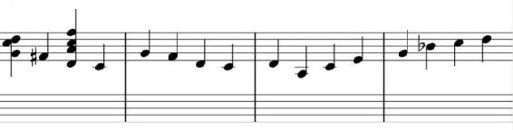
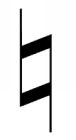
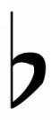

Figure 5.2. Note the sharped note in the first bar and the flattened note in the fourth bar. Note also the presence of chords notated on the staff in the first bar (these will be discussed in the next section).
Vertical placement is the general rule when it comes to pitch—it tells you what note you are dealing with. But it doesn't always tell you exactly which pitch to play. Sometimes a composer wants to alter one of the tones of the staff. There are seven notes available on the staff, but Western harmony has twelve notes in each octave.
To open up the other five notes, composers alter the first seven by raising them (sharping them) or lowering them (flattening them) by a semitone. There are two ways of doing this. The first way we have already seen—by altering the key signature, a composer or transcriber alters every incidence of a particular note on the staff in every octave. This allows them to write music in a key that isn’t C major or one of its relatives. But that isn’t always what a composer wants. Sometimes they want to be playing in one key and have a section that uses a scale from another key. Sometimes the key center of the song temporarily moves. Sometimes a transcriber is working on a jazz solo, and they come across a sequence that is derived primarily from the chromatic scale. How can a person write all twelve tones if only seven are available? Changing the key only gives you another seven.
The answer is accidentals. Accidentals are naturals, sharps, and flats written in front of individual notes themselves on the staff. They alter only those notes, individually, for the duration of the bar in which they occur, unless they are cancelled during that bar by another, opposing, accidental. In general, these accidentals are:
1. Naturals (which remove a sharp or a flat, either from the key signature or from an accidental earlier in that bar).

2. Single sharps (which raise the pitch a half step)
3. Single flats (which lower the pitch a half step).

These three accidentals, together with the 12 key signatures, allow a music writer to write any of the available pitches in 12-tone music in any key.
It does not, however, fully cover all of the available alterations. Double sharps and double flats exist, which alter their notes by a full step, and which are used to raise or lower a note that is already raised or lowered in the key signature or by another accidental. This is useful when writing certain chords or scales, since it is sometimes necessary to write a note that functions as, for instance, the D of a scale but is enharmonically equivalent to C or E. This is an uncommon occurrence, but it does happen, particularly in modern composition—both in jazz and classical music.